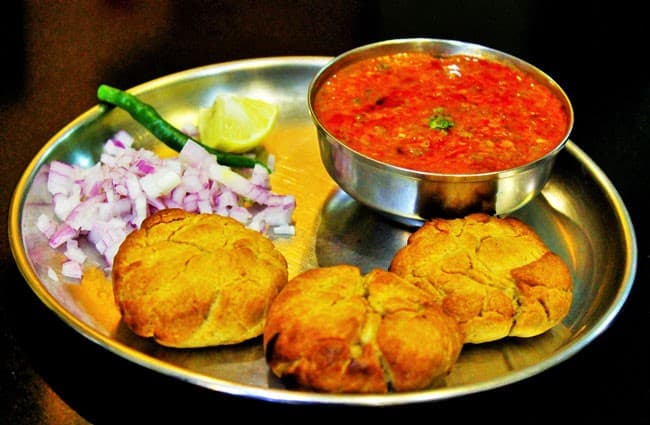

Dal Baati
Home
Description
Dal Baati is a traditional Rajasthani dish that combines rich flavors with hearty textures. It consists of baati—round, baked or deep-fried wheat flour balls—served with dal, a spiced lentil curry usually made from a mix of toor, chana, and moong dals. The baatis are typically soaked in ghee, making them crisp on the outside and soft inside. This iconic meal is often accompanied by churma (sweet crushed baati with ghee and sugar), creating a balanced and indulgent experience that's deeply rooted in Rajasthani hospitality and culture.
Ingredients
For Dal:
- 1/2 cup Toor Dal (split pigeon peas)
- 1/4 cup Chana Dal (optional for richness)
- 1 medium Tomato (chopped)
- 1 small Onion (chopped)
- 2-3 Green chilies (slit)
- 1 tsp Ginger-garlic paste
- 1/2 tsp Turmeric powder
- 1 tsp Red chili powder
- 1 tsp Coriander powder
- 1 tsp Cumin seeds
- 1/2 tsp Mustard seeds
- A pinch of Asafoetida (hing)
- Salt to taste
- 2 tbsp Ghee (clarified butter)
- Fresh Coriander leaves for garnish
- Water as required
For Baati:
- 2 cups Whole wheat flour
- 1/4 cup Semolina (sooji)
- 1/2 tsp Salt
- 2 tbsp Ghee (plus extra for brushing)
- Water (to knead dough)
Steps
Making Dal
- Rinse toor dal (and chana dal if using) well.
- Pressure cook the dals with 3 cups water, turmeric powder, and salt until soft (about 3-4 whistles).
- Heat ghee in a pan. Add cumin seeds, mustard seeds, and asafoetida. Let them splutter.
- Add chopped onions and sauté until golden brown.
- Stir in ginger-garlic paste and slit green chilies. Cook for 1-2 minutes.
- Add chopped tomatoes and cook until soft and mushy.
- Add red chili powder and coriander powder. Mix well.
- Pour in the cooked dal, add water if needed to adjust consistency, and simmer on low heat for 10 minutes.
- Garnish with fresh coriander leaves.
Making Baati
- In a mixing bowl, combine whole wheat flour, semolina, and salt.
- Add ghee and rub it into the flour until the mixture resembles breadcrumbs.
- Gradually add water and knead into a firm dough.
- Divide the dough into equal-sized balls.
- Preheat the oven to 180°C (350°F).
- Place the baati balls on a baking tray and bake for 25-30 minutes, turning them occasionally to brown evenly.
- Once baked, brush the hot baatis generously with ghee.
Serving
Serve the hot baatis with the dal alongside or poured over. For an authentic touch, add churma (sweet crushed baati mixed with jaggery and ghee) on the side.
More Recipes